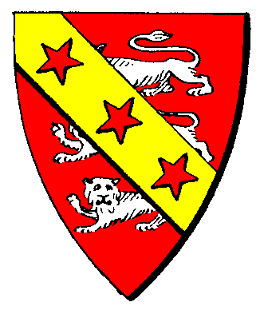

| Übersicht,
Alltägliches und Lokales (RPG) |
|
Halborks gesucht! (1  ) )
|
Tjárius
 |
*schlägt ein knapp mit Buchstaben bezeichnetes Pergament am Anschlagsbrett auf und sucht sich anschließend eine Bar um die Wartezeit auf Antworten tot zu schlagen.
Auf dem Pergament steht:*
Ehrenwerte Damen und Herren der Scherbe,
mein Gefolge sucht tapferen Neuzugang.
Falls jemand weiß, wo man Halborks findet
und anwerben kann, würde ich mich sehr über eine
Nachricht oder Antwort unter diesem Anschlag freuen!
Grüße
Tjárius
Zur 24. Stunde am 36.Dunkelfrost im Jahre 455 |
18.07.13 15:31
|
|
Icke wieder
 |
Werter Jungheld,
Halborks sind schlechte Magier und verweigern das Produzieren. Eine erfolgreiche Heldengruppe besteht aber aus 8, eher 9 Leuten und ist mit Kriegern nicht innerhalb eines Jahres zu erreichen.
Falls Ihr also ein echter Held werden wollt - nicht nur jemand der Dämonen im Schatten hinterherjagt - dann könnt Ihr diesen Hinweis sinnvoll für Euch nutzen.
Grüßle
der Frostlektionär
Fürst Ottor Waefre,
Vorsteher von Oneiros
Zur 3. Stunde am 40.Dunkelfrost im Jahre 455 |
19.07.13 9:04
|
|
Arin
 |
*Zwischen einer Gruppe von Halborks tritt eine junge Halblingsdame hervor. Geht schon einmal Voraus, ich habe hier noch etwas zu erledigen!, spricht die junge Dame und beginnt etwas auf einen Zettel zu schreiben. Kurze Zeit später stellt sie das schreiben ein, befestigt den Zettel an dem Anschlagsbrett und spurtet anschließend nach vorne um die vorgelaufenen Halborks einzuholen*
Werter Fürst,
wenn man seine Träume und Ziele verfolgt spielt es keine Rolle zu welcher Rasse man gehört!
Wenn sich jemand dazu berufen fühlt die hohe Kunst der Magie zu erlernen dann sollte er dies tun. Meine treusten Weggefährten sind Halborks und diese sind sehr geschicklich was den Umgang mit der Magie betrifft. Es mag zwar stimmen, dass sie selbst anfälliger gegen Magieangriffe sind aber ihre eigenen Zauber sind genauso gut wie die von anderen Magiern und sie haben zudem andere Stärken.
Leider kann ich dem jungen Herrn aber auch nicht weiterhelfen. Leider ist die Population von Halborks und Wichteln in der Vergangenheit stark zurückgegangen.
Hochachtungsvoll,
Baronesse Arin,
Vorsteherin von Burg Finsterforst,
Kleines Biest
Zur 13. Stunde am 40.Dunkelfrost im Jahre 455 |
19.07.13 11:17
|
|
Arthwr Dyddplentyn
 |
Du gefunde,besuch mal Horkfeste!
Kardinal Arthwr Dyddplentyn,
Vorsteher von Horkfeste,
Kardinal im Dienste des einzig wahren Glaubens an Urvan,
Ehemann der reizenden Chihiro Takeshi,
Kuchemampf- un Birtrinkgroßmeista
Zur 2. Stunde am 41.Dunkelfrost im Jahre 455 |
19.07.13 14:22
|
|
Tjárius
|
*die Zeilen liest und beginnt zu schmunzeln*
Ich denke ich habe bereits alle Informationen, die ich benötige. Und nun auch noch die letzte, die mir fehlte!
Danke vielmals!
*hängt nen Fisch zu dem Anschlag und verschwindet, um sich einen Seefahrer zur suchen*
Tjárius
Zur 19. Stunde am 44.Dunkelfrost im Jahre 455 |
20.07.13 11:08
|
|
Ecthélion kánotir Gondolin
 |
*denkt scharf nach und entsinnt sich*
irgendwann gab es in Reditio de Camelot auch mal Halborks...
Freiherr Ecthélion kánotir Gondolin,
Vorsteher von Fendrakan Zuflucht
Zur 13. Stunde am 79.Dunkelfrost im Jahre 455 |
28.07.13 13:36
|
|
Übersicht,
Alltägliches und Lokales (RPG)
|